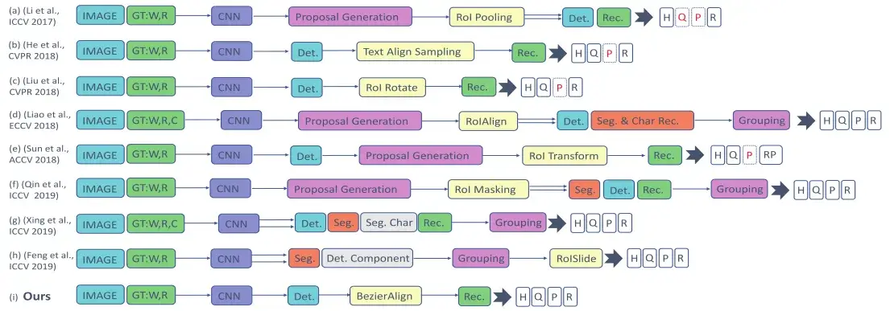
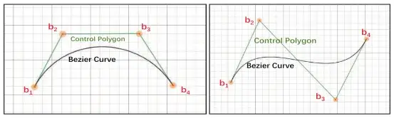
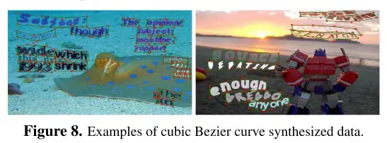
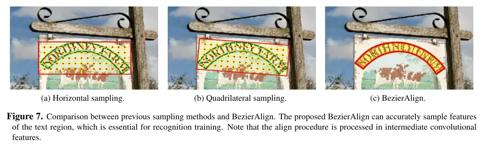

资源
-
ABCNet 精读：使用自适应贝塞尔曲线网络进行进行实时场景文本定位 OCR 文本定位 文本检测 CVPR_贝塞尔曲线目标检测-CSDN 博客
-
[2002.10200] ABCNet: Real-time Scene Text Spotting with Adaptive Bezier-Curve Network (arxiv.org)
-
ABCNet: Real-time Scene Text Spotting with Adaptive Bezier-Curve Network | Papers With Code
正文
Abstract
场景文本检测与识别受到越来越多的研究关注。现有的方法大致可以分为两类：基于字符的方法和基于分割的方法。这些方法要么对于字符注释来说代价高昂，要么需要维护复杂的流水线，这通常不适合实时应用。在这里，我们通过提出自适应贝塞尔曲线网络（ABCNet）来解决这个问题。我们的贡献有三个方面：
- 第一次，我们通过参数化的 Bezier 曲线自适应地拟合定向或弯曲文本。
- 设计了一种新颖的 BezierAlign 层，用于提取任意形状文本实例的精确卷积特征，与以往的方法相比，精度有了显著的提高。
- 与标准包围盒检测相比，我们的 Bezier 曲线检测引入的计算开销可以忽略不计，从而使我们的方法在效率和精度上都具有优势。
在面向或弯曲的基准数据集（即 Total-Text 和 CTW1500）上的实验表明，ABCNet 在达到最高精度的同时，显著提高了速度。特别是，在全文本上，我们的实时版本在识别准确率方面比最近最先进的方法快 10 倍以上。代码可在 https://git.io/AdelaiDet 上找到。
1. Introduction
场景文本检测和识别由于其在计算机视觉中的众多应用而受到越来越多的关注。尽管最近取得了巨大进展，但由于其在大小、纵横比、字体样式、透视失真和形状方面的多样性，检测和识别野生文本在很大程度上仍未解决。尽管深度学习的出现显著提高了场景文本识别任务的性能，但当前现实世界应用的方法仍存在相当大的差距，尤其是在效率方面。
近年来，许多端到端方法显著提高了定向或弯曲场景文本检测的性能。然而，这些方法要么使用维护复杂管道的基于分割的方法，要么需要大量昂贵的字符级注释。此外，几乎所有这些方法的推理速度都很慢，阻碍了部署到实时应用中。因此，我们的目标是设计一个简单而有效的端到端框架，用于在图像中定位定向或弯曲场景文本，确保快速的推理时间，同时获得与最先进的方法相当甚至更好的性能。
为了实现这一目标，我们提出了自适应贝塞尔曲线网络（ABCNet），这是一个端到端的可训练框架，用于定向或弯曲场景文本识别。ABCNet 支持使用 Bezier 曲线适配进行定向或弯曲场景文本检测，与标准矩形边界框检测相比，这引入的计算开销可以忽略不计。此外，我们设计了一种新的特征对齐层 BezierAlign，用于精确计算曲线形状文本实例的卷积特征，从而在不增加太多计算代价的情况下获得较高的识别精度。首次用参数化的 Bezier 曲线表示方向文本或弯曲文本，实验结果表明了该方法的有效性。
请注意，以前的方法，如 TextAlign 和 FOTS，可以被视为 ABCNet 的特例，因为四边形边界框可以被视为具有 4 个直边界的最简单的定向或曲线边界框。此外，ABCNet 可以避免复杂的变换，如 2D 注意，使识别分支的设计变得相当简单。我们将我们的主要贡献总结如下。
-
为了准确定位图像中的定向和弯曲场景文本，首次提出了一种新的基于 Bezier 曲线的曲面场景文本的简明参数表示方法。与标准边界框表示法相比，它引入的计算开销可以忽略不计。
-
我们提出了一种抽样方法，也称为 BezierAlign，用于精确的特征对齐，因此识别分支可以自然地连接到整体结构。通过共享主干特征，识别分支可以设计成轻量化的结构。
-
该方法的简单性使其能够实时地进行推理。ABCNet 在两个极具挑战性的数据集 Total-Text 和 CTW1500 上实现了最先进的性能，显示出在有效性和效率方面的优势。
1.1. Related Work
场景文本检测需要同时检测和识别文本，而不是只关注一个任务。近年来，基于深度学习的方法的出现极大地提高了文本识别的性能。检测和识别的性能都有了很大的提高。我们将几种有代表性的基于深度学习的场景文本检测方法归纳为以下两类。
常规的端到端场景文本定位
Li 等人提出了第一种基于深度学习的端到端可训练场景文本检测方法。该方法成功地使用 ROI 池通过两阶段框架将检测和识别特征结合在一起，但它只能识别水平和聚焦的文本。它的改进版本显著提高了性能，但速度有限。He 等人和 Liu 等人采用无锚机制，提高训练和推理速度。它们分别使用相似的采样策略，即文本对齐采样和 ROI 旋转，来从四边形检测结果中提取特征。请注意，这两种方法都不能定位定向或弯曲场景文本。
定向或弯曲的端到端场景文本
检测定向或弯曲的场景文本，廖等人提出了一种 MASK TextSpotter，它对 MASK R-CNN 进行了巧妙的提炼，并使用字符级监督来同时检测和识别角色和实例掩码。该方法显著提高了指向或弯曲场景文本的定位性能。然而，字符级的地面真理是昂贵的，并且使用免费的合成数据在实践中很难为真实数据产生字符级的地面真理。它的改进版本大大减轻了对角色级别的基本事实的依赖。该方法依赖于区域建议网络，这在一定程度上限制了算法的速度。Sun 等人提出了预先生成四边形检测包围盒的文本网，然后利用区域建议网络对检测特征进行反馈进行识别。虽然该方法可以直接从四边形检测中识别出方向文本或弯曲文本，但性能仍然有限。
最近，Qin 等人提出了自己的观点。建议使用感兴趣区域掩码来聚焦于定向或弯曲的文本区域。然而，结果可能很容易受到离群点像素的影响。此外，分割分支增加了计算负担；拟合多边形过程也引入了额外的时间消耗；分组结果通常是锯齿状的，不平滑。某文献中的工作是第一个单级定向或弯曲场景文本定位方法，需要字符级别的地面真实数据来进行训练。某文献作者提出了一种新的采样方法 RoISlide，它使用了文本实例预测片段中的融合特征，因此对长方向或弯曲文本具有鲁棒性。

2. Adaptive Bezier Curve Network (ABCNet)
ABCNet 是用于定位定向或弯曲场景文本的端到端可训练框架。在图 3 中可以看到直观的流水线。我们采用了单次激发、无锚点的卷积神经网络作为检测框架。移除锚盒大大简化了我们任务的检测。这里，在检测头的输出特征图上密集地预测检测，该检测头由 4 个堆叠的卷积层组成，步长为 ，填充为 核为 。接下来，我们从两个部分介绍了 ABCNet 的关键部分：
- Bezier 曲线检测；
- BezierAlign 和 Recognition 分支。
2.1. Bezier Curve Detection
与基于分割的方法相比，基于回归的方法是定向或弯曲文本检测的更直接的解决方案。然而，以前的基于回归的方法需要复杂的预测来拟合文本边界，这在实践中对各种文本形状都不是很有效和健壮的。为了简化定向或弯曲场景文本的检测，遵循回归方法，我们发现 Bezier 曲线是曲线表示的一个最基本的概念，适合于弯曲文本的参数化。Bezier 曲线表示使用 Bernstein 多项式作为其基础的参数曲线。其定义如下面公式所示。
其中， 表示次数， 表示第 个控制点，而 表示 Bernstein 基多项式，如下式所示：
式中，为二项式系数。为了用 Bezier 曲线拟合任意形状的文本，我们从现有的数据集和现实世界中综合观察了定向或弯曲场景文本，并经验表明，一条三次 Bezier 曲线（即 为 ）在实际应用中足以适应不同类型的定向或弯曲场景文本。三次贝塞尔曲线的图示如图所示。

基于三次 Bezier 曲线，我们可以将定向或弯曲场景的文本检测简化为一个总共有八个控制点的包围盒回归。请注意，具有四个控制点（四个顶点）的直线文本是定向或弯曲场景文本的典型情况。为了保持一致性，我们在每条长边的三段点上插入额外的两个控制点。
对于每个文本实例，我们使用
其中 和 分别表示 4 个顶点的最小 和 值。预测相对距离的优点是与 Bezier 曲线控制点是否超出图像边界无关。在探测头内部，我们只需要一个具有 16 个输出通道的卷积层来学习 和 ，这几乎是免费的，同时结果仍然可以准确。
2.1.1 Bezier Ground Truth Generation
在这一部分中，我们将简要介绍如何基于原始注记生成 Bezier 曲线地面真值。定向或弯曲数据集，例如 Total-Text 和 CTW1500，对文本区域使用多边形注释。给定来自曲线边界的注记点 ，其中 表示第 个注记点，主要目标是获得方程中三次 Bezier 曲线 的最优参数。要实现这一点，我们只需应用标准最小二乘法，如公式所示：
这里， 表示曲线边界的注释点的数量。对于 Total-Text 和 CTW1500， 分别为 和 。 是通过使用累积长度与多段线周长的比值来计算的。我们将原始多段线注释转换为参数化的贝塞尔曲线。请注意，我们直接使用第一个和最后一个注释点分别作为第一个（）和最后（）控制点。可视化比较如图所示，这表明生成结果在视觉上甚至比原始地面实况更好。
2.1.2 Bezier Curve Synthetic Dataset
对于端到端的场景文本识别方法，总是需要大量的自由合成数据。然而，现有的 800k SynText 数据集仅为大多数直文本提供四边形边界框。为了使定向或弯曲的场景文本多样化和丰富，我们使用 VGG 合成方法合成了 150k 个合成数据集（94723 个图像包含大多数直文本，54327 个图像包含大部分弯曲文本）。特别地，我们从 COCOText 中过滤出 40k 个无文本的背景图像，准备每个背景图像的分割掩码和场景深度，用于下面的文本渲染。为了扩大合成文本的形状多样性，我们修改了 VGG 合成方法，将场景文本与各种艺术字体和语料库合成，并为所有文本实例生成多边形注释。然后，将注释用于生成贝塞尔曲线地面实况。我们的合成数据示例如下：

2.2. BezierAlign
为了实现端到端的训练，以前的方法大多采用各种采样(特征对齐)方法来连接识别分支。通常，采样方法代表网络内区域裁剪过程。换言之，在给定特征地图和感兴趣区域（ROI）的情况下，使用采样方法来选择 ROI 的特征并高效地输出固定大小的特征地图。然而，以前基于非分割的方法的采样方法，例如 ROI 池化]、RoIRotate、文本对齐采样或 ROI 变换不能正确地对齐定向或弯曲文本的特征(RoISlide 许多预测分段)。通过利用紧凑 Bezier 曲线包围盒的参数化特性，我们提出了 BezierAlign 特征采样方法。BezierAlign 是 RoIAlign 的扩展。与 RoIAlign 不同，BezierAlign 的采样网格形状不是矩形。相反，定向网格或弯曲网格的每一列都与文本的贝塞尔曲线边界垂直。采样点在宽度和高度上分别具有等距间隔，并相对于坐标进行双线性内插。
在形式上给定输入特征图和 Bezier 曲线控制点的情况下，并行处理大小为 的矩形输出特征图的所有输出像素。以具有位置 (g_{iw}，g_{ih}) 的像素 （来自输出特征图）为例，我们通过公式计算 ：
然后利用 和方程计算 Bezier 曲线上边界 和下 Bezier 曲线边界 的点。使用 和 ，我们可以通过公式线性地索引采样点 ：
利用 的位置，我们可以很容易地应用双线性插值法来计算结果。以前的采样方法和 BezierAlign 之间的比较如图所示

**Recognition branch.**得益于共享主干功能和 BezierAlign，我们设计了一个轻量级的识别分支，如表所示，以加快执行速度。它由 6 个卷积层、1 个双向 LSTM 层和 1 个全连接层组成。基于输出分类分数，我们使用经典的 CTC 损失进行文本字符串（GT）对齐。注意，在训练过程中，我们直接使用生成的贝塞尔曲线 GT 来提取 RoI 特征。因此，检测分支不会影响识别分支。在推理阶段，RoI 区域由描述的检测贝塞尔曲线代替。
3. Experiments
我们在最近引入的两个面向或弯曲场景文本基准 Total-Text 和 CTW1500 上对我们的方法进行了评估，这两个基准也包含大量的直文本。为了验证该方法的有效性，我们还在全文本上进行了消融实验。
3.1. Implemented details
本论文的主干遵循大多数以前论文的共同设置，即 ResNet-50 和特征金字塔网络（FPN）。对于检测分支，我们使用 RoIAlign 对输入图像的 、、、 和 分辨率的 个特征地图进行；对于识别分支，我们对 、 和 大小的 个特征地图进行 BezierAlign。预先训练的数据来自公开可用的基于英语词级的数据集，包括 SynthText150K、从原始 COCO-Text 过滤的 15k 图像和 7k ICDAR-MLT 数据。然后在目标数据集的训练集上对预先训练的模型进行微调。此外，我们还采用了数据增强策略，例如随机尺度训练，短尺寸随机选择在 560 到 800 之间，长尺寸小于 1333；随机裁剪，确保裁剪大小大于原始尺寸的一半，并且没有任何文本被剪切（对于一些很难满足条件的特殊情况，我们不采用随机裁剪）。我们使用 4 个特斯拉 V100 图形处理器对我们的模型进行训练，图像批量大小为 32。最大迭代次数为 150K，初始化学习率为 0.01%，第 70K 迭代时为 0.001，第 120K 迭代时为 0.0001。整个培训过程大约需要 3 天。
3.2. Experimental results on Total-Text
数据集。Total-Text 是 2017 年提出的最重要的定向或弯曲场景文本基准之一，收集自各种场景，包括类文本场景复杂性和低对比度背景。它包含 1,555 张图像，其中 1,255 张用于训练，300 张用于测试。为了与真实世界的场景类似，此数据集的大多数图像都包含大量常规文本，同时保证每个图像至少有一个弯曲文本。文本实例使用基于词级的多边形进行标注。它的扩展版本通过在文本识别序列之后为每个文本实例标注固定的 10 个点来改进其对训练集的标注。数据集仅包含英文文本。为了评估端到端的结果，我们遵循与以前的方法相同的度量标准，即使用 F 度量来衡量词的准确率。
消融研究：BezierAlign。为了评估建议组件的有效性，我们在该数据集上进行了消融研究。我们首先对采样点的数量对端到端结果的影响进行了敏感性分析。从结果可以看出，采样点的数量对最终的性能和效率有显著的影响。我们发现 (7，32) 实现了 F-measure 和 FPS 之间的最佳折衷，这将作为后续实验的最终设置。我们通过将 BezierAlign 与图 7 所示的先前采样方法进行比较，进一步评估了 BezierAlign。
消融研究：Bezier 曲线检测。另一个重要组件是贝塞尔曲线检测，它支持定向或弯曲场景文本检测。因此，我们还进行了实验来评估 Bezier 曲线检测的时间消耗。与标准边界框检测相比，Bezier 曲线检测不会引入额外的计算。
与最先进的方法进行比较。我们进一步将我们的方法与以前的方法进行了比较。我们的单尺度结果（短尺寸为 800）可以在实现实时推理速度的同时获得有竞争力的性能，从而在速度和单词准确性之间实现更好的权衡。通过多尺度推理，ABCNet 实现了最先进的性能，显著优于以前的所有方法，尤其是在运行时间方面。值得一提的是，我们的更快版本可以比以前的最佳方法快 11 倍以上，精度相当。
定性结果。结果表明，我们的方法可以准确地检测和识别大部分有向或弯曲的文本。此外，我们的方法还可以很好地处理直接文本，具有几乎四边形的紧凑边界框和正确的识别结果。图中还显示了一些错误，这些错误主要是由于错误地识别其中一个字符造成的。
3.3. Experimental Results on CTW1500
数据集。CTW1500 是 2017 年提出的另一个重要的面向或弯曲场景文本基准。与 Total-Text 相比，该数据集既包含英文文本，也包含中文文本。此外，该标注是基于文本行级的，它还包括一些类似文档的文本，即许多小文本可以堆叠在一起。CTW1500 包含 1k 个训练图像和 500 个测试图像。
实验。由于中文文本在该数据集中的占用非常小，我们在训练过程中直接将所有中文文本视为“看不见的”类。请表明在端到端场景文本识别方面，ABCNet 可以显著超过以前最先进的方法。
4. Conclusion
我们提出了 ABCNet 一种使用 Bezier 曲线进行定向或弯曲场景文本定位的实时端到端方法。ABCNet 通过使用参数化的 Bezier 曲线重新表示定向或弯曲的场景文本，可以检测到带有 Bezier 曲线的定向或弯曲的场景文本，与标准的边界框检测相比，计算量可以忽略不计。有了这样规则的贝塞尔曲线边界框，我们就可以通过一个新的 BezierAlign 层自然地连接一个轻量级的识别分支。
此外，通过使用我们的 Bezier 曲线合成数据集和公开可用的数据，在两个定向或弯曲场景文本基准（Total-Text 和 CTW1500）上的实验表明，我们的 ABCNet 可以获得最先进的性能，这也比以前的方法快得多。